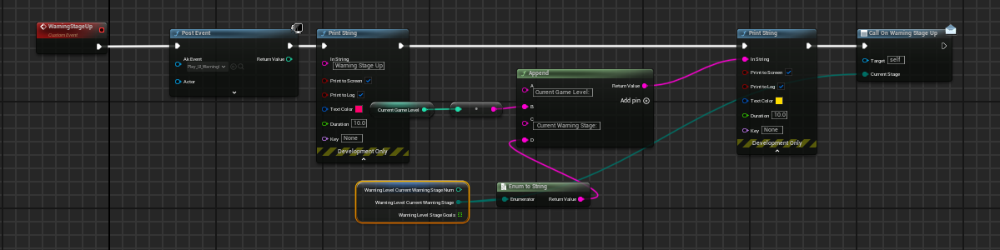
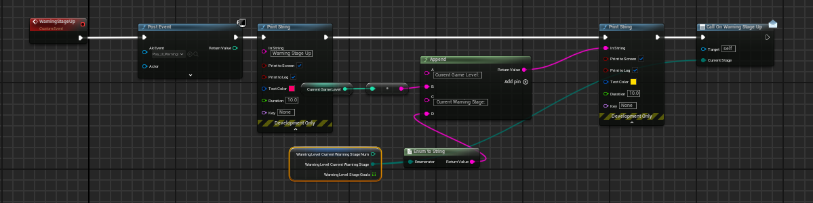

About
Gull-Tastrophe is a 3D funny action-adventure game that lets players act as a seagull to poop and create chaos everywhere. Enjoy life being a seagull and do whatever you want. The goal is to beat the human out of your home island!
Project Overview
Role: Gameplay Programmer & Game Designer
Team size: 6
Engine: Unreal 5
I pitched this game and was green-lit by the program advisor. I was responsible for system/gameplay programming and game design.
Contributions
Game Progression
In Gull-Tastrophe, I was responsible for designing and implementing the Warning Level System and the Event System, both of which are essential to the game's progression mechanics. The warning level dynamically adjusts game difficulty, while the event system increases the warning level.
Warning Level System
The Warning Level System is key to game progression, as it dynamically changes the game’s difficulty by spawning more enemies, changing enemies' behavior, etc. To ensure flexibility and scalability, I designed the system to be highly modular and abstract, enabling it to integrate with other game systems.
The system uses Event dispatchers to hook into related systems; for example, when the warning level increases, the Building System spawns more NPCs, and the UI System displays a banner. The warning level can be triggered by various in-game events, allowing it to affect multiple gameplay systems without redundant referencing.
 

Event System
Handling different in-game events was tough, so I needed to build a solid and flexible system. My solution is to use a Data Table structure to store all the in-game events and an Event Manager to handle registration and processing efficiently. Events are categorized into three types: Normal Events, where scores are added directly to the warning level; Count Events, where scores accumulate only after the event has occurred a certain number of times; and Combo Events, where scores are stored temporarily and added when triggered by specific conditions


The centralized Event Manager registers events from various Blueprints and determines their type based on the Event Struct, using this categorization to decide how and when to add scores, making the process simpler of introducing new events or modifying existing ones. This approach minimizes conditional checks and avoids major modifications to the system when scaling or adding features.

Destructible System
In Gull-Tastrophe, there are two types of destructible that players can destroy by either dashing or pooping. Each destructible has a specific amount of health and spawns rewards upon being destroyed.
Base Destructible Class
TTo handle the shared logic for destructibles, I created a Base Destructible Class that all destructible types inherit from. This class manages common functionality such as triggering explosion effects and spawning rewards. I set up a Box Collider inside the base destructible Blueprint to handle damage detection and combined Physics Fields with Geometry Collections to create visual explosion effects.
Individual Destructible Types
Each destructible type extends the base class and adds unique behavior. For example: Destructible Police Station, Destructible Jar, Destructible Car. Using inheritance allows for easy adjustments and modifications of individual destructibles while keeping the shared logic centralized.


Building System and Falling Logic
In the game, destructibles can be stacked on top of each other. Destroying one causes the ones above it to fall and shift down. To optimize performance, I implemented a "faked" physics system for this effect, using animations and mathematical calculations instead of real-time physics simulations. The Falling Logic is 1. When a block is destroyed, it checks for an upper neighbor. 2. If an upper neighbor exists, it recursively calls the Fall Event, setting the current block's position as the target location for the neighbor to fall to. 3.This process continues until no neighbors are found.

This approach provides greater control over the falling style and distance while being much cheaper in terms of performance compared to real-time physics simulations.